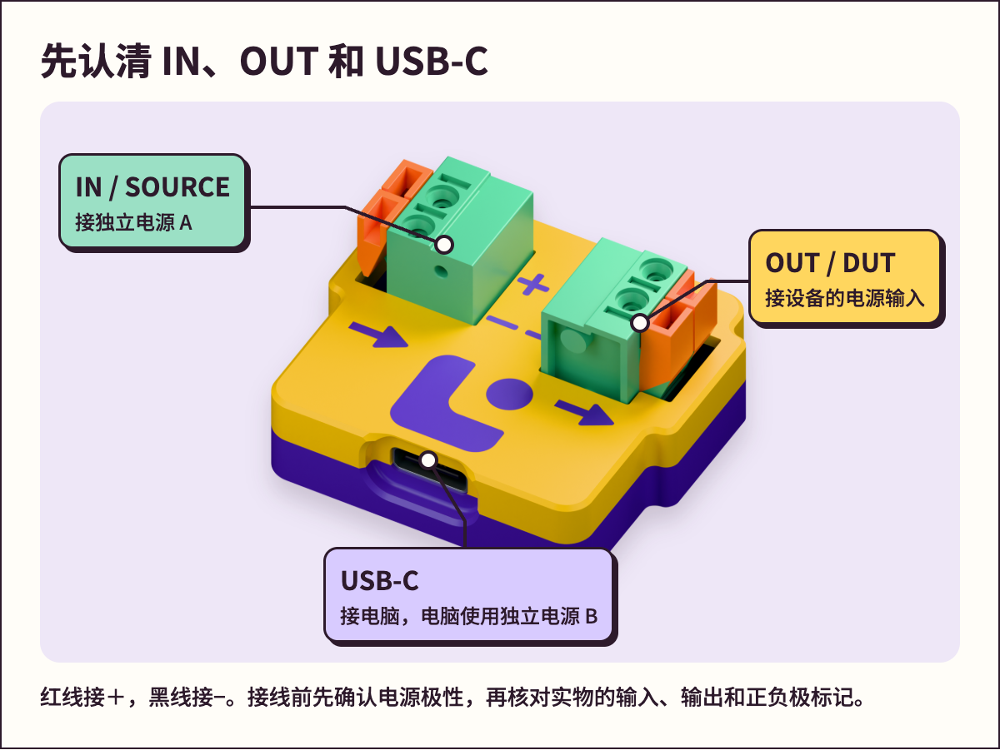

3.3–28 V，持续热平衡电流 3 A
关闭电源输出后再接线
核对 + / − 标记
只从这里取电
B 与 A 是不同的适配器
控制与通信，不给负载供电
标称直流工作电压
3.3–28 V
正常使用按此标称范围
持续热平衡电流
3 A
按持续负载和散热选型
慢断保险丝额定电流
5 A
不代表整机瞬时电流上限
软件过压保护触发
VIN > 30.5 V
使用固件发布的有效测量值
过压保护自动解除，不等于自动重新供电；不需要额外的过压复位命令。持续热平衡电流为 3 A，请在外部电源上设置合适的限流。